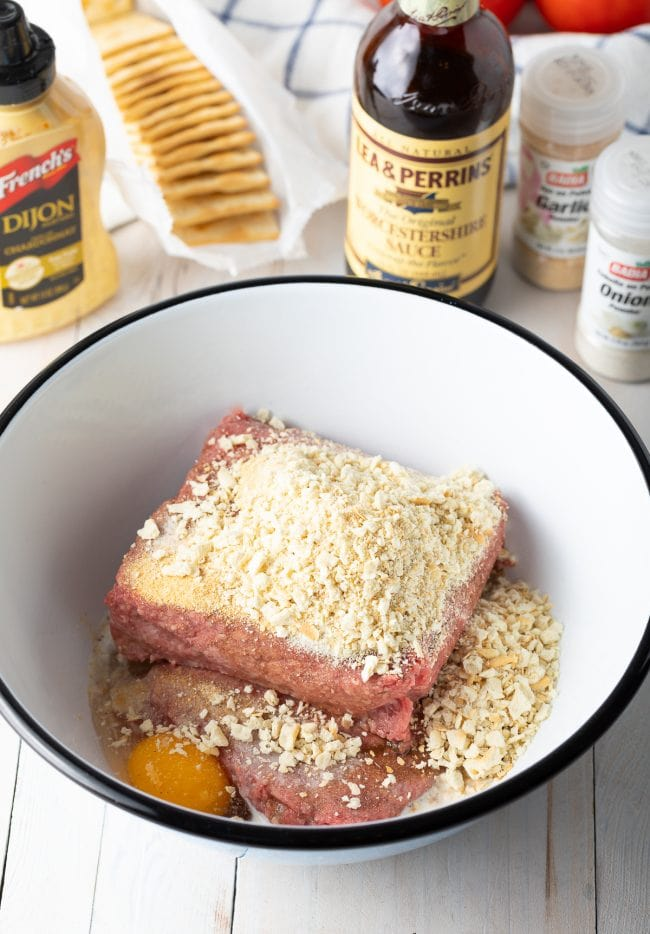
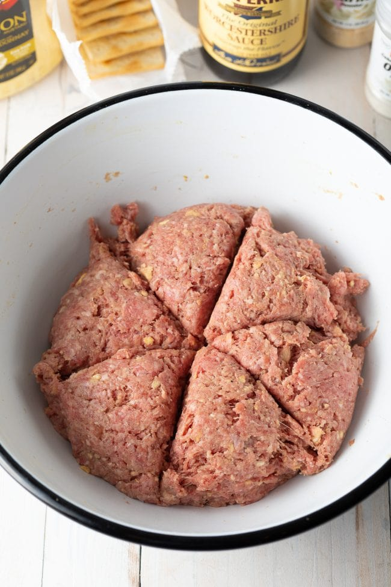
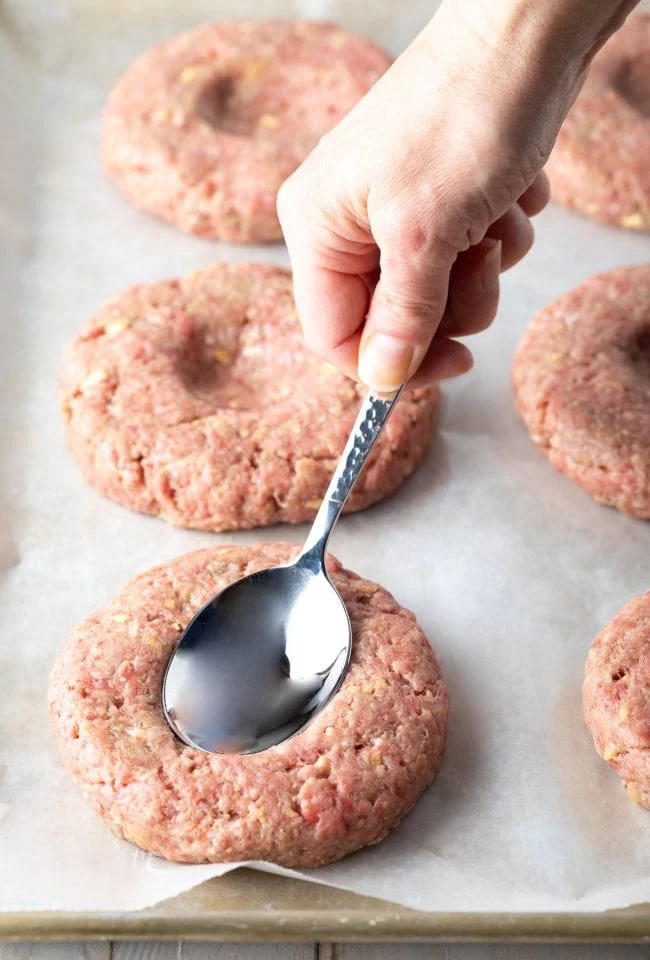
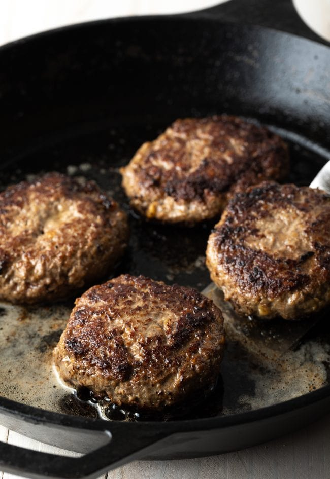
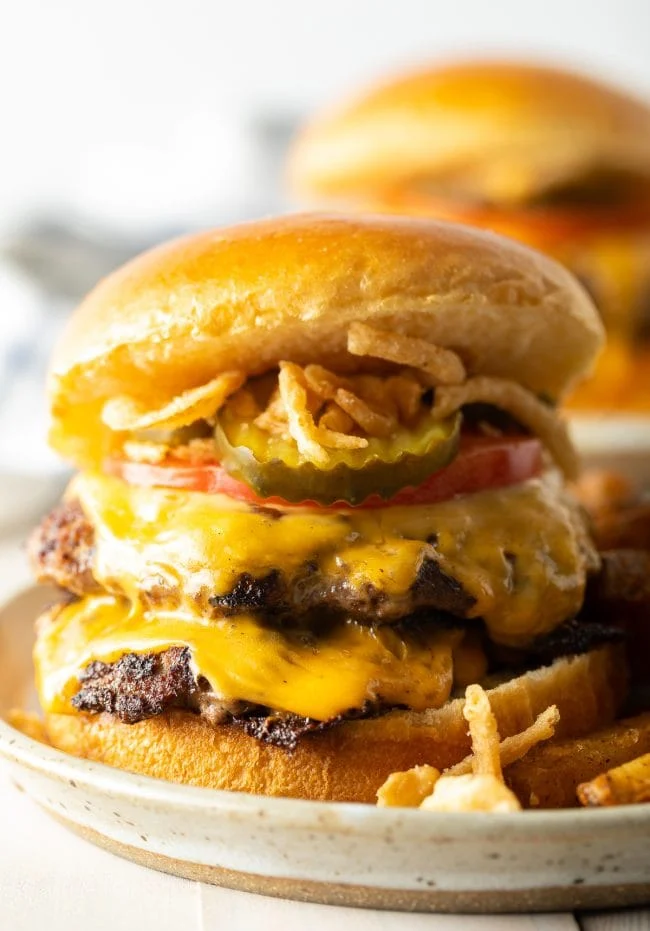

Best Hamburger Patty Recipe – Thick or thin, made on the grill or stove top, this is the best and easiest all-purpose recipe for perfect burger patties every time! These juicy, delicious homemade hamburgers are ready in less than 30 minutes and are a must-make for your next cookout.

The secret to incredibly juicy burger patties is the addition of crushed crackers or panko breadcrumbs to hold in the natural fat and juices.
We recommend using crackers if you have them. Adding crushed crackers is an old-school method to add more flavor than plain breadcrumbs. Plus, it’s super handy for using up that package of crackers you’ve had sitting in the pantry for weeks.
Here is everything you need to make the best homemade burger patty recipe:
Get the Full Hamburger Recipe Below with Exact Measurements and Detailed Instructions.
It’s helpful to save prep time and add lots of flavor to your patties by adding dried spices rather than fresh herbs to the hamburger mix. For instance, you can incorporate red pepper flakes for a spicier burger, a bit of cumin and chili powder for a Southwestern-inspired bite, or parsley and dill to create a Mediterranean taste.
It seriously only takes mere minutes to make restaurant-quality homemade burgers from scratch. Prep your workspace and ingredients before getting started and you’ll be whipping out hot plates from your home kitchen (or backyard) in no time!
First, set out a large mixing bowl and add in the ground beef, crushed crackers, egg, Worcestershire sauce, milk, and spices.
Use your hands to combine until the mixture is thoroughly smooth.
 Next, press the meat down in the bowl into an even disk. Use a knife to cut and divide the hamburger patty mixture into 6 – 1/3 pound grill or skillet patties or 12 thin griddle patties. Like so:
Set out a baking sheet lined with wax paper or foil to hold the patties. One at a time, gather the patty mix and press firmly into patties of your desired thickness. You typically want hamburger patties to be slightly larger than the buns they’ll be served on since they’ll shrink slightly during in the cooking process.
Place the formed patties on the baking sheet. With thick patties, press an indentation in the center of each patty, so they don’t puff up while cooking.
You can stack the patties with sheets of wax paper between layers if needed.
Then, preheat the grill or a skillet to medium heat, approximately 350-400 degrees F. I love using a cast-iron skillet for getting that drool-worthy caramelized sear on the burgers.
 For thick patties: Grill or fry the patties for 3-4 minutes per side for a medium burger.
For thin patties: Cook on the griddle for 2 minutes per side.
Ideally, you only want to flip your burgers once or twice during cooking.
Pro Tip: Homemade cooked hamburger patties will keep well tightly wrapped in plastic wrap, or in an airtight container, in the fridge for up to 3 days, or in the freezer for up to 3 months.
Stack the hot patties on hamburger buns, and dress up with your favorite hamburger toppings and condiments. One of my favorite condiments is Big Mac Sauce!
You can try making your homemade burgers into a thick backyard barbecue classic with lettuce, tomato, pickles, and a bit of mayo and mustard.
Or my personal, gotta-have burger offers two thin patties, each covered by a slice of melted American cheese, and all loaded with tomato, pickles, crispy fried onions, and bbq sauce.
Other great toppings you can use are red onions, ketchup, and butter-grilled buns. Serve with either onion rings or sweet potato fries.
At least we can agree that the best homemade hamburgers are served with a heaping side of cajun fries, shoestring fries, or baked french fries!
 Odin Recipe Homepage